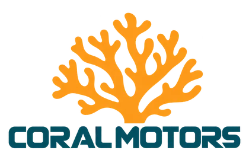
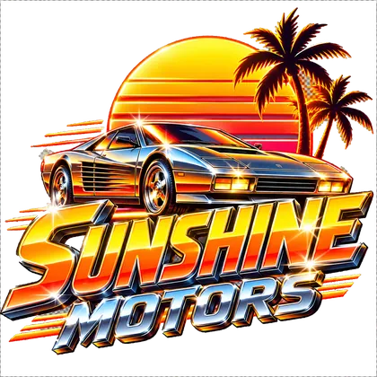

Coral Motors
« Les trois premières minutes appartiennent au moteur. »Le mot du patron · Russell Fenner
- PatronRussell Fenner
- Depuis1976
- Adresse418 Palmetto Drive, Highway
Depuis l’échangeur 9, suivez Palmetto Drive jusqu’au coupé rouge sous l’auvent. - HorairesTous les jours 9 h–19 h ; essais jusqu’à 18 h 30, trois premières minutes sans commentaire.
Son histoire
Russell ouvre en 1976 avec cinq voitures et une paire de lunettes teintées. Il choisit les berlines au confort du siège et les familiales au nombre de sacs de plage acceptés.
En 1984, le modèle rouge immobilise les passants devant la vitrine. Russell en fait sa vedette, puis peint une ligne au sol pour que l’admiration laisse passer les autres clients.
Anecdotes
- En avril 1984, le client Colin Wade apporte neuf sacs pour mesurer un coffre.
- En novembre 1985, Mél annonce un essai silencieux de trois heures ; Russell lui montre son minuteur de trois minutes.
- En mai 1986, Dolores Van Pelt inaugure le bureau financement et demande une chaise plus facile que le dossier.
La pub
Jouée au premier degré, sur SUNSET DRIVE 102.7 FM.
(voix commerciale tranquille)Écouter SUNSET DRIVE 102.7 FM →
Chez Coral Motors, on vend des voitures pour les gens qui aiment conduire.
Berlines confortables.
Coupés sportifs.
Familiales avec assez de coffre pour une semaine à la plage.
Et un modèle rouge qui attire tellement les regards qu'on conseille de porter des lunettes.
Essais tous les jours sur Highway.
Le vendeur vous laisse conduire sans parler.
(pause)
Enfin, pendant les trois premières minutes.
Cette semaine : financement facile.
(pause)
Le mot « facile » est sujet à interprétation.
Coral Motors.
Certaines voitures ne demandent qu'une chose :
prendre la route.
À savoir
- Le mot « facile » possède sa propre note en bas de page.
- Les lunettes d’essai se rendent avec les clés.
Le voisin

Sunshine MotorsSunshine Motors est presque en face ; Russell admire son palmier mais mesure les coffres avec de vrais bagages.